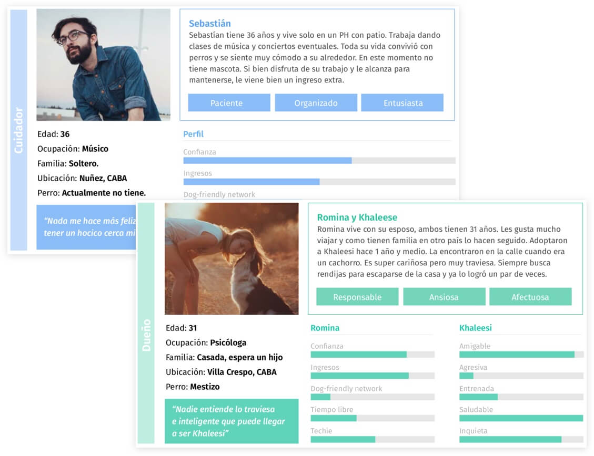
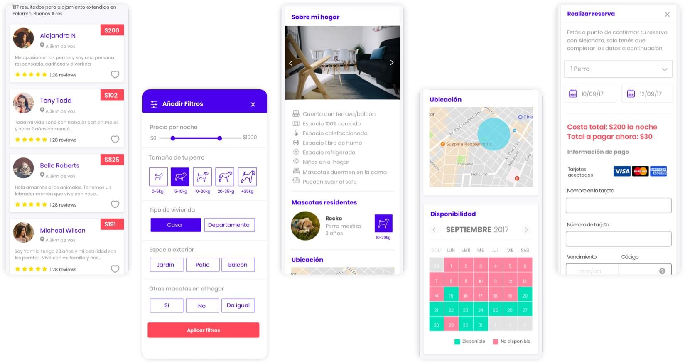
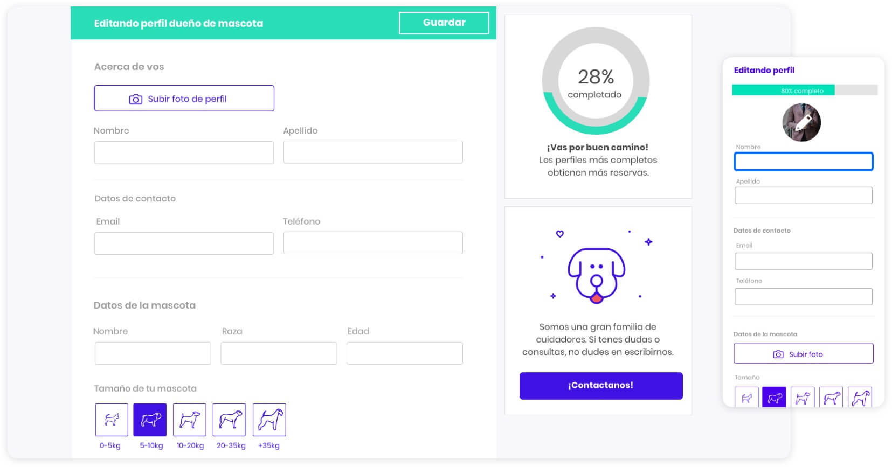

Guausurfing
Research
Desing
Prototype
Match dog owners with a loving dogsitter so they can relax when they travel
GuauSurfing is an online tool that allow pet owners and sitters to contact each other to solve their pet hosting problems. It allows the owners to find a trustworthy and safe place to leave their pet when they travel and the caregivers to make money and enjoy the company of the animals.
Redesign the current site improving it's usability with a visual design that communicates the company values and message. I helped the guausurfing team as an external consultor working closely with their team.
Interviews
I conducted a first round of interviews with dog owners and potential dogsitters. During the interviews we chated about what they were expecting to get from the service, wich other services they used and what was most important to them when chosing someone to look after their pet or when hosting a pet at their home.
This are the main insights gathered in this phase:
Personas
Based on the research we created 2 personas to represent our 2 main users groups: owners and sitters. This reflect most of the goals and fears we found.
For the dog owner persona we also reflected the dog personality.
Usability Tests
I conducted usability tests on the existing web to find the main problems and propose improvements.
From the tasks given, the participants managed to find sitters, although they did not always understand how to make a reservation and several problems were found in the process:
A detailed document was created for the client pointing and describing all the issues.
User feedback and testing were the foundations of the design process. I started sketching paper prototypes and consulting with the team to make sure we were moving in the right direction. We iterated quickly to hi-fidelity prototypes and as the project grew I defined and refined the key visual elements and design components to improve both the interactions and the look and feel.
Pen and paper sketches <3
Home screen - Convey emotions with photos. Provide a clear action for the user via the form.
Filtering, choosing and booking a caregiver.
Completing your dog profile and yours.
Hope you enjoyed learning about this project! If you want to know more about it or other projects I've been working on please contact me, I'd love to chat!